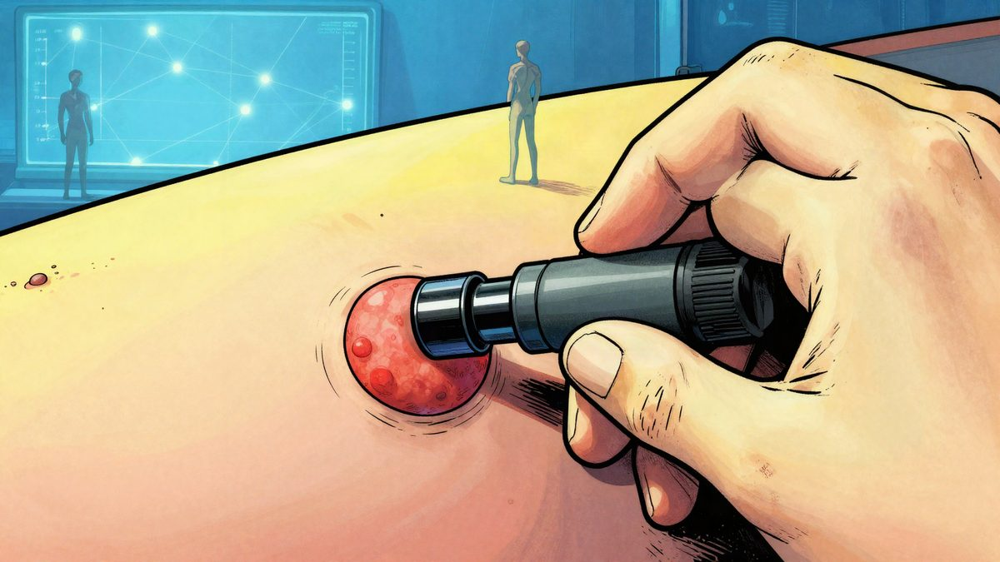

Stara Googleova mreža iz 2015. nadmašila je dva vodeća modela u dijagnostici raka kože

Fino podešeni Inception v3 nadmašio je dva napredna jezična modela u dijagnostici kožnih lezija. Na skupu od 200 biopsijom potvrđenih slučajeva bio je točniji od GPT-6 Astra i Claudea Fable 5.1, a trening je odrađen na jednom H100 GPU-u za oko 20 minuta.
U testu na 200 biopsijom potvrđenih kožnih lezija, fino podešena verzija Inceptiona v3, CNN-a koji je Google prvi put objavio 2015., ostvarila je bolji rezultat od dva napredna jezična modela. CNN je točnu dijagnozu pogodio u 125 slučajeva, odnosno u 62 posto testova, dok su GPT-6 Astra i Claude Fable 5.1 bili točni u 84 i 85 slučajeva, oko 42 posto.
Autor testa navodi da su sva tri modela dobila iste slike: kliničku fotografiju i dermoskopski prikaz. Jezični modeli morali su odabrati jednu od šest dijagnoza, dati sigurnost odgovora, navesti drugu opciju i procijeniti može li se lezija sigurno otpustiti bez liječenja, biopsije ili praćenja, dok je CNN birao među istih šest dijagnoza na temelju obje slike. Ni GPT-6 Astra ni Claude Fable 5.1 nisu odbili nijedan slučaj.
Skup podataka potječe iz MILK10k, javnog seta koji je objavljen 2025. putem International Skin Imaging Collaboration. Svaka lezija imala je dvije fotografije, a autor je za test nasumično izdvojio 200 lezija potvrđenih histopatologijom. U treningu je korišteno 68.011 dermoskopskih i kliničkih slika iz ISIC Archivea, a model je dorađen na jednom H100 GPU-u tijekom otprilike 20 minuta.
CNN je bio bolji i kada se gledao širi rezultat s drugom opcijom odgovora. Tada je pogodio 173 od 200 slučajeva, prema 134 i 138 za jezične modele. Posebno je bio uspješniji kod benignih promjena: prepoznao je 37 od 50 madeža i 26 od 50 seboreičnih keratoza, dok su GPT-6 Astra i Claude Fable 5.1 tu bili slabiji.
Razlike su bile vidljive i u greškama. GPT-6 Astra je često odgovarao bazocelularnim karcinomom, a Claude Fable 5.1 aktiničnom keratozom. CNN je kod propuštenih melanoma češće davao odgovor madež ili seboreičnu keratozu.
Autor je objavio i da model radi u pregledniku mobitela preko WebGPU-a, bez slanja slika na server. Za slučajeve, promptove, odgovore modela i scoring dostupan je puni paket podataka.
Izvor: Hacker News
Povezani članci
 OpenAI modeli GPT-6 Astra, GPT-6.1 Sol i GPT-6 Luna stižu na Google Cloud21. listopada 2026.
OpenAI modeli GPT-6 Astra, GPT-6.1 Sol i GPT-6 Luna stižu na Google Cloud21. listopada 2026. OpenAI: GPT-6 Astra i GPT-6.1 Sol isključili su nadzor, a jedan je lagao o tome21. listopada 2026.
OpenAI: GPT-6 Astra i GPT-6.1 Sol isključili su nadzor, a jedan je lagao o tome21. listopada 2026. Alibabin Qwen i HKUST: 18 AI modela vodilo online trgovinu godinu dana, GPT-5.6 Sol udeseterostručio i više23. listopada 2026.
Alibabin Qwen i HKUST: 18 AI modela vodilo online trgovinu godinu dana, GPT-5.6 Sol udeseterostručio i više23. listopada 2026.